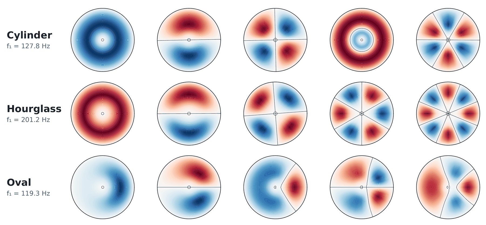
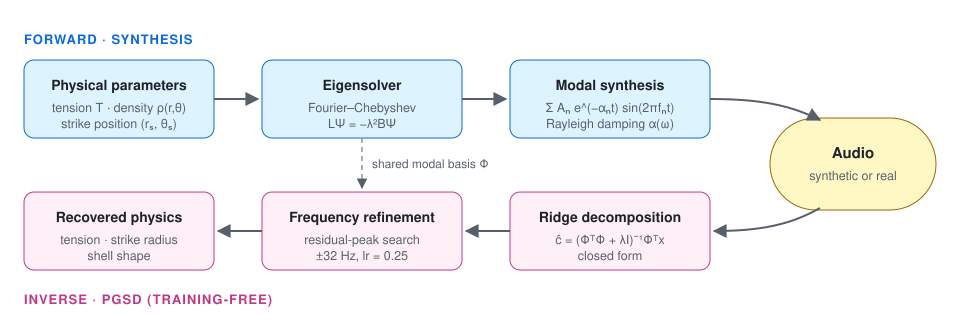

Interpretable Inverse Acoustic Modeling of Percussion via Physics-Guided Spectral Decomposition

We build a physics-based digital twin of the Chenda, a South Indian percussion instrument. The forward model synthesises sound from eigenmodes of a non-uniform membrane. Physics-Guided Spectral Decomposition (PGSD) runs the model in reverse: it projects a recording onto the same modal basis and recovers tension, strike position and shell shape. It needs no training data.

1 · Tension sweep
Forward synthesis at increasing membrane tension. Pitch rises as f ∝ √T.
2 · Strike position
Same drum, struck from centre to rim. Mode excitation follows |Ψₙ(rₛ, θₛ)|.
3 · Shell geometry
Density distribution changes the eigenspectrum. The oval shell breaks symmetry and lifts degeneracy.
4 · Real recordings: original vs reconstruction
Real Chenda strikes and their reconstructions by each method. Mean R² and MOS over the full set (Table 5): PGSD 0.70 / 3.69, sinusoidal 0.59 / 3.08, FFT 0.45 / 2.49, NMF 0.41 / 1.86.
| Strike | Original | PGSD (ours) | Sinusoidal | FFT peaks | NMF |
|---|---|---|---|---|---|
| beat 1 | |||||
| beat 10 | |||||
| beat 12 |
Citation
@inproceedings{rajan2026pgsd,
title = {Interpretable Inverse Acoustic Modeling of Percussion via Physics-Guided Spectral Decomposition},
author = {Rajan, Rajeev and Benty, Kevin and Palliparambil, Athul Joe Joseph},
booktitle = {Proceedings of the 27th International Society for Music Information Retrieval Conference (ISMIR)},
address = {Abu Dhabi, UAE},
year = {2026}
}